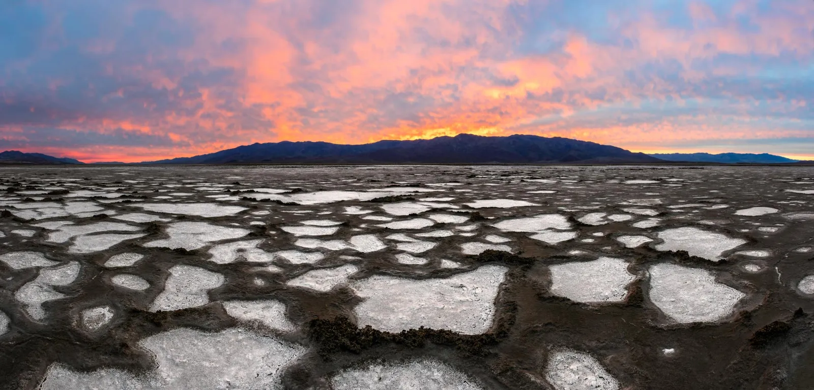
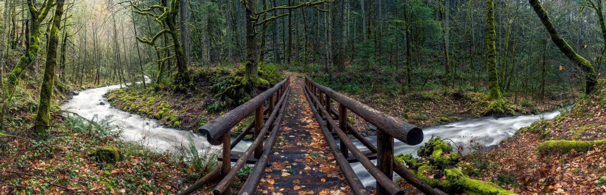
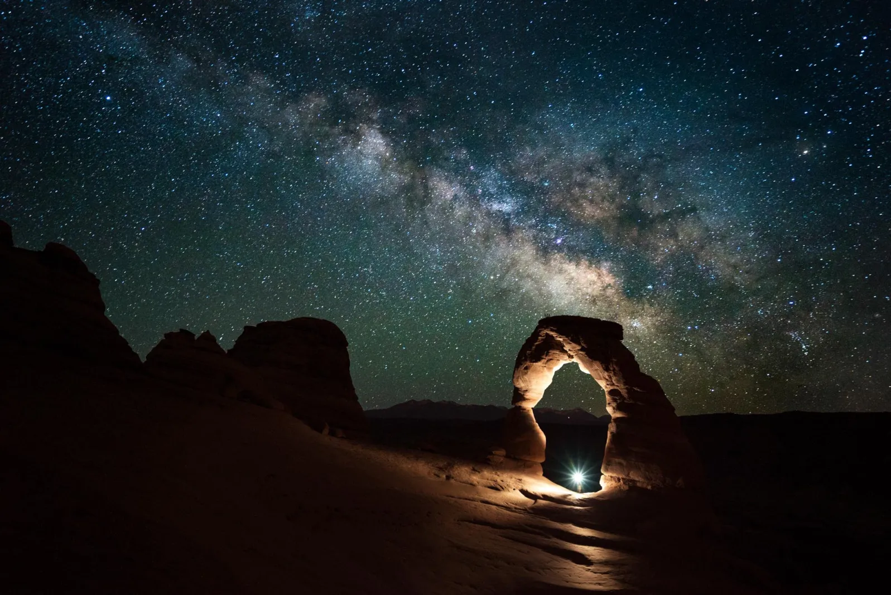
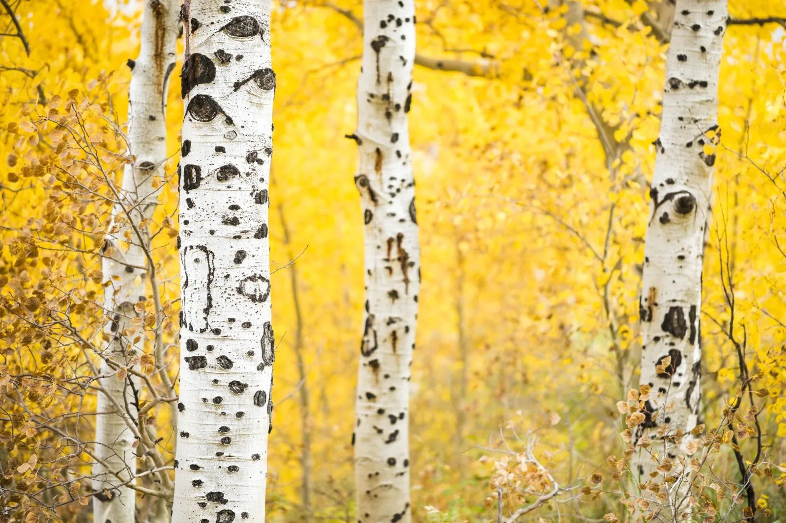

One thing that gives me immense fulfillment in my work is to help others who are new to photography. I've learned a few tips, tricks and processes over the years and passing that knowledge on is a huge source of signal for me. I've critiqued countless photos over the years for workshop students, photo clubs, judging photo contests, and even the occasional emailer. Through having my images critiqued over the years and critiquing others images, I've learned a lot about what makes an image speak to those who view it.
Some of these are obvious to some while not so obvious to others. Some are simple, some more advanced. The point is that nearly all the compelling travel photos I've seen contain these 5 critical ingredients. Ok, let's go.
1) Straight Horizon

I want to say that this is the most obvious ingredient of them all, but in reality this is a concept that takes a while to truly get ingrained in your mind. Checking your horizon should be, without fail, step number one when post processing your photos. It doesn't matter whether or not you used a tripod or had a bubble level in your hot shoe or even if your camera has a built in scale; those tools are meant to get your horizon straight most of the time.
There are still times where it may be just a few degrees off (and that's all it takes for someone to pick up on the fact that something is off). Virtually every reputable post processing program on the planet will have a straightening tool included so find it, use it and don't forget about it.
2) A Composition That Leads The Viewer's Eye

Using leading lines in art is something that we all learn in grade school. An image that naturally takes a viewer's eye through and around the scene is incredibly important and vital to creating an image that people want to look at for more than .25 seconds. In reality, not every image/composition can have leading "lines" per se, but every image can be composed in a way that thoughtfully leads the viewer's eye to where the creator wants it to go.
3) Good Contrast
Our eyes need to see contrast. Contrast helps our eyes move through a scene just like leading lines do. If the image is flat and all the colors are muddled close together, it's hard to figure out where to look. Having contrast present in your work isn't just specific to photography — it's used in just about any form of design you can think of (think web design, logo design, architecture).
Contrast really just means have a strong black point and a strong white point in your image. This is something that I had to learn over the course of several years. Of course there are exceptions to every rule — I have seen some beautiful low-contrast images, but there has to be a clear and concise reason for breaking the rule.
4) A Clear Subject

This is another ingredient that can take quite a while to really get ingrained into your mind and thought processes while creating images. The thing to remember here is to just slow down when out creating an image. Using a tripod really helps with this because it forces you to slow down and thoughtfully compose your scene.
Take a step back and really study your composition. What is your subject? What does this photograph revolve around? Is the subject clear in this composition? Are there distractions that compete with it? Are those distractions competing with the subject or complimenting it? These are all questions that should go through your mind while setting up a shot. After a while, you simply do this without even thinking about it. But at first, it has to be done intentionally.
5) Have Something Interesting In Every Part of the Image

The rule of thirds is one of the most widely used tools for composing a photograph and placing a subject in an interesting place within the frame. There certainly are times when a subject needs to be placed right in the middle of the frame but more often than not, that isn't the case. So what happens when you've composed the scene and placed the subject in a good place?
Well, ask yourself this: "Is the rest of the photo interesting as well? Or just the subject?" Think of it this way — a composition with a "rule of thirds" overlay on top of it will be split into nine different blocks. If you can fill up all or even just most of those blocks with something interesting, you will have a much stronger image than normal.
The reason that a composition like this works is because there's something interesting in every part of the image. If we split the image in thirds horizontally, the top third has mountains and sky in it while the bottom two have the lake. If it was just water though, this composition wouldn't be that interesting. Finding the boulders and taking the time to compose them properly makes those bottom two thirds much more inviting to the eye.
"I spent about 10 to 20 minutes setting up this shot and trying different things. Eventually I decided to take my shoes off, roll up my pant legs and tread out into the frigid water."
I initially tried to compose the scene from the shoreline (the path of least resistance) but the boulders were just too far away. Eventually I decided to take my shoes off, roll up my pant legs and tread out into the frigid water. Within a few minutes my feet were numb so it was no big deal after that.
Conclusion
It should go without saying that there are not only 5 ingredients that make up compelling travel photos, but these are certainly amongst the most important. So what do you think? Do you agree? Disagree? Do you have some ingredients you'd like to add? Leave a comment below and let's start the discussion.